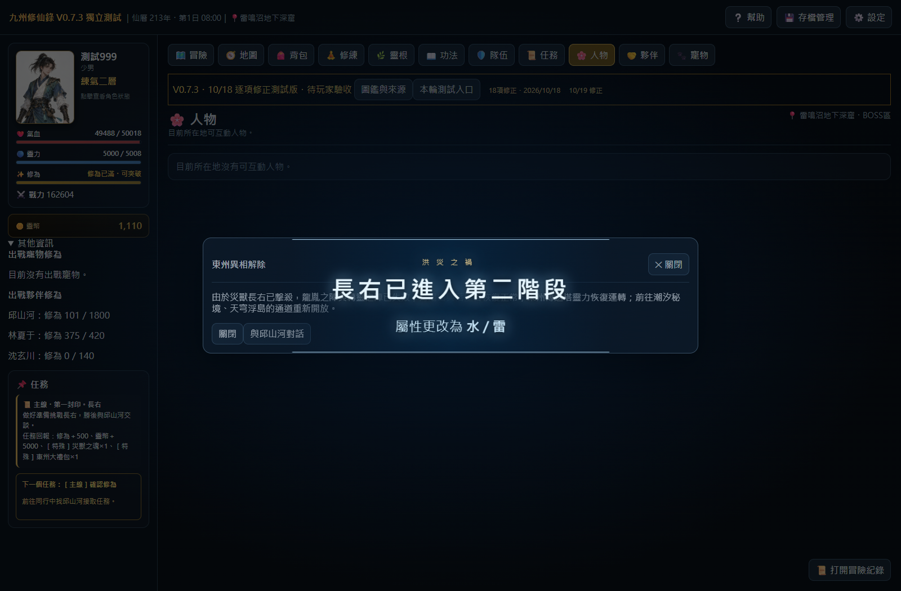

開啟本次遊戲測試版 · 建置 20261019-items-battle-1
本次共74項功能與流程檢查通過，另有8張圖片的透明度與無損編碼核對。正式母檔與正式遊戲入口保持原樣。
主線勝利已更新任務進度，但沒有關閉舊戰鬥視窗。畫面仍停在舊血量和鎖定按鈕。本次在完成結算且已離開原戰鬥後，關閉殘留戰鬥視窗；已有新對話、結果提示時保留新畫面，必敗戰仍需玩家按繼續。
| 項目 | 內容 | 完成情形 | 位置 |
|---|---|---|---|
| 1 | NPC收取禮物 | 依後續確認，林熙沒有回禮；不新增入口。其他已定案NPC回禮入口已實測。 | items1019-test.cjs |
| 2 | 七本特殊功法 | 改成功法分類、書冊圖片；舊背包物品保留數量移回持有功法，原學習流程與存讀檔通過。 | items1019.js |
| 3 | 百靈藥水 | 原配方已為百年靈草×1＋玉葉果×1＋靈露×1；實際公共煉製成功，沒有要求或消耗一階靈草。 | items1019-test.cjs |
| 4 | 鎮岳錘 | 依本次確認標示問道檯來源，不新增未定價的商品或改動庫存。 | items1019.js |
| 5 | 逐星弓 | 依本次確認標示問道檯來源，不新增未定價的商品或改動庫存。 | items1019.js |
| 6 | 問道槍 | 依本次確認標示問道檯來源，不新增未定價的商品或改動庫存。 | items1019.js |
| 7 | 問心劍 | 依本次確認標示問道檯來源，不新增未定價的商品或改動庫存。 | items1019.js |
| 8 | 納靈葫蘆 | 依本次確認標示問道檯來源，不新增未定價的商品或改動庫存。 | items1019.js |
| 9 | 破境拳套 | 依本次確認標示問道檯來源，不新增未定價的商品或改動庫存。 | items1019.js |
| 10 | 破軍刀、玄機靈傘 | 依本次確認標示問道檯來源，不新增未定價的商品或改動庫存。 | items1019.js |
| 11 | 忡靈四件套裝圖鑑 | 四件皆顯示集齊後永久解鎖忡靈術，可點選查看原功法；未新增額外套裝倍率。 | items1019.js |
| 12 | 問靈道冠 | 依本次確認標示問道檯來源，不新增未定價的商品或改動庫存。 | items1019.js |
| 13 | 玄心道袍、問天戰衣、問道戰靴、踏虛靈履、問道戰衣 | 依本次確認標示問道檯來源，不新增未定價的商品或改動庫存。 | items1019.js |
| 14 | 不滅獸甲圖片 | 改為獨立可穿戴的空心獸甲，不含妖物本體；所有介面共用同圖。 | items1019.js |
| 追加1 | 六件問道飾品 | 問心戒、戰心指環、破境項鍊、道心靈墜、問道佩、問天玉佩標示問道檯。 | items1019.js |
| 追加2 | 新手護符來源 | 標示開啟新手大禮包取得×1。 | items1019.js |
| 追加3 | 特殊裝備隱藏位階 | 初位、中位、高位、仙位及原能力、效果和跨位基礎能力縮放保持不變，已比對全部現有特殊裝備。 | items1019-test.cjs |
| 長右 | 專屬血條與戰位 | 上方專屬裝飾血條、數字內置、雙階段換色；我方四格縮小，另驗證三名敵方隨從排版空間。僅預留位置，未新增長右小怪設定。 | boss1019.js |
| 戰鬥 | 主線結算後不退出 | 已重現A線青臭蟲全倒、任務推進但舊戰鬥視窗仍鎖住。修正共用退出流程，保留後續對話、勝敗提示及必敗戰繼續步驟。 | battle1019.js |
另通過七本特殊功法的正常存檔、重新載入與數量保留。修復前重現記錄 · 功法存讀檔 · 圖片核對 · 內建imagegen來源與提示詞



驗收使用獨立瀏覽器與測試角色，未存取玩家Chrome紀錄。流程測試提高角色能力以驗證結算，並非難度平衡驗收；BOSS隨從只做排版測試，不是新遭遇設定。